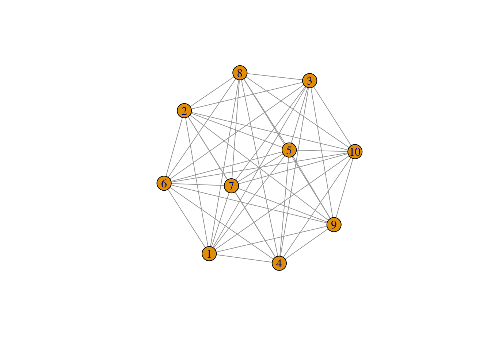
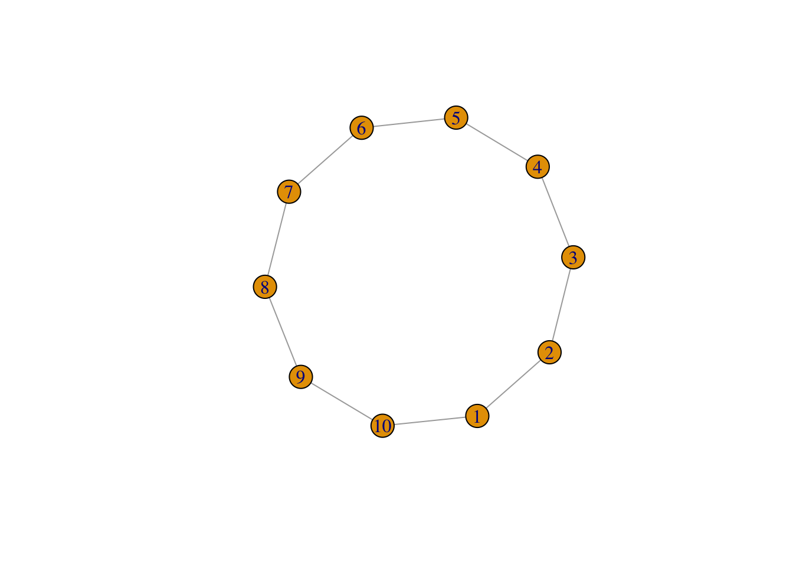
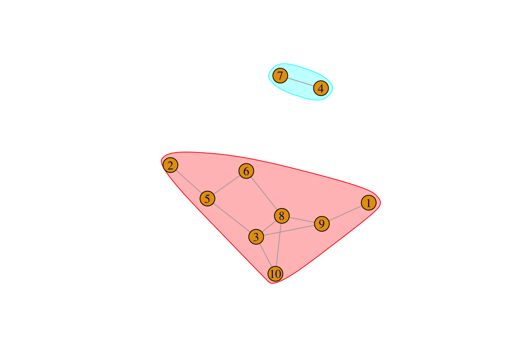
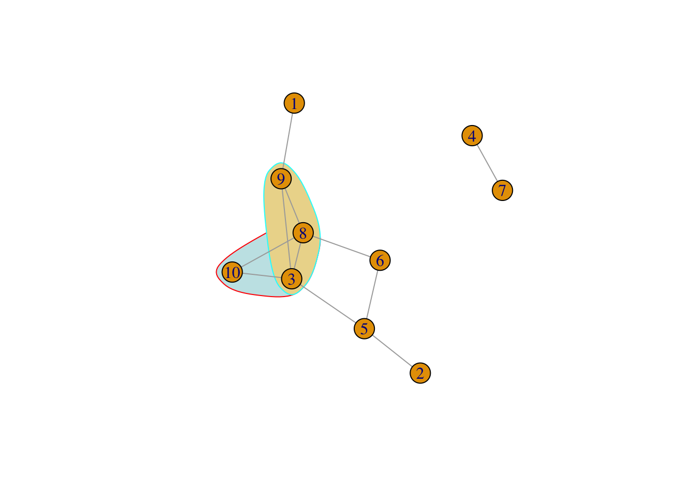
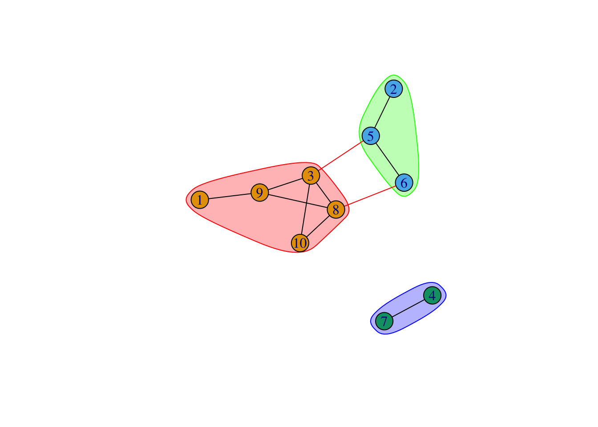

Code
library(igraph)
library(tidyverse)
library(ggraph)
library(gridExtra)Chun Su
August 24, 2019
In last post, I covered the basic components of IGRAPH objects and how to manipulate IGRAPH. You may notice that most of those manipulation do not really require a IGRAPH object to play with. However, in this post, you will realize the advantage of using IGRAPH over data.frame in network analysis.
In this session, we are going to use a new un-directed graph called gr generated by sample_gnp().
Degree measures the number of edges connected to given vertex. In igraph, we use degree. Be aware that, for directed graph, the node degree can be “in-degree” (the edge number pointing to the node) and “out-degree” (the edge number pointing from node). We can also summaries the all degree by using degree_distribution.
[1] 1 1 4 1 3 2 1 4 3 2[1] 0.0 0.4 0.2 0.2 0.2strength is weighted version of degree, by summing up the edge weights of the adjacent edges for each vertex.
Order measures the edge number from one node to the other. In igraph package, we use distances function to get order between two vertices. For directed graph, in mode only follow the paths toward the first node, while out mode goes away from the first node. If no connection can be made, Inf will be return.
[,1]
[1,] 3 [,1] [,2] [,3] [,4] [,5] [,6] [,7] [,8] [,9] [,10]
[1,] 0 4 2 Inf 3 3 Inf 2 1 3
[2,] 4 0 2 Inf 1 2 Inf 3 3 3
[3,] 2 2 0 Inf 1 2 Inf 1 1 1
[4,] Inf Inf Inf 0 Inf Inf 1 Inf Inf Inf
[5,] 3 1 1 Inf 0 1 Inf 2 2 2
[6,] 3 2 2 Inf 1 0 Inf 1 2 2
[7,] Inf Inf Inf 1 Inf Inf 0 Inf Inf Inf
[8,] 2 3 1 Inf 2 1 Inf 0 1 1
[9,] 1 3 1 Inf 2 2 Inf 1 0 2
[10,] 3 3 1 Inf 2 2 Inf 1 2 0To get detail route from one node to the other, we use path.
[[1]]
+ 4/10 vertices, from 2d81952:
[1] 1 9 8 10
[[2]]
+ 4/10 vertices, from 2d81952:
[1] 1 9 3 10[[1]]
+ 7/10 vertices, from 2d81952:
[1] 1 9 3 5 6 8 10
[[2]]
+ 5/10 vertices, from 2d81952:
[1] 1 9 3 8 10
[[3]]
+ 4/10 vertices, from 2d81952:
[1] 1 9 3 10
[[4]]
+ 5/10 vertices, from 2d81952:
[1] 1 9 8 3 10
[[5]]
+ 7/10 vertices, from 2d81952:
[1] 1 9 8 6 5 3 10
[[6]]
+ 4/10 vertices, from 2d81952:
[1] 1 9 8 10Transitivity measures the probability that the adjacent vertices of a vertex are connected. This is also called the clustering coefficient, a proxy to determine how well connected the graph is. This property is very important in social networks, and to a lesser degree in other networks.

[1] 1
[1] 0There are multiple different types of transitivity can be calculated (weighted or un-weighted). Also, the transitivity can be calculated locally for a sub-graph by specifying vertex ids. See details by ?transitivity
Centrality indices identify the most important vertices within a graph. In other words, the “hub” of network. However, this “importance” can be conceived in two ways:
The simplest of centrality indicator is degree centrality (centr_degree), aka, a node is important if it has most neighbors.
Besides degree centrality, there are
centr_clo) - a node is important if it takes the shortest mean distance from a vertex to other verticescentr_betw) - a node is important if extent to which a vertex lies on paths between other vertices are high.centr_eigen) - a node is important if it is linked to by other important nodes.$res
[1] 1 1 4 1 3 2 1 4 3 2
$centralization
[1] 0.2
$theoretical_max
[1] 90$res
[1] 0.3888889 0.3888889 0.7000000 1.0000000 0.5833333 0.5384615 1.0000000
[8] 0.6363636 0.5833333 0.5000000
$centralization
[1] 0.8690613
$theoretical_max
[1] 4.235294$res
[1] 0.0 0.0 8.0 0.0 6.5 1.0 0.0 4.5 6.0 0.0
$centralization
[1] 0.1666667
$theoretical_max
[1] 324$vector
[1] 2.519712e-01 1.933127e-01 1.000000e+00 2.093280e-17 5.762451e-01
[6] 5.244145e-01 1.036823e-17 9.869802e-01 7.511000e-01 6.665713e-01
$value
[1] 2.980897
$options
$options$bmat
[1] "I"
$options$n
[1] 10
$options$which
[1] "LA"
$options$nev
[1] 1
$options$tol
[1] 0
$options$ncv
[1] 0
$options$ldv
[1] 0
$options$ishift
[1] 1
$options$maxiter
[1] 1000
$options$nb
[1] 1
$options$mode
[1] 1
$options$start
[1] 1
$options$sigma
[1] 0
$options$sigmai
[1] 0
$options$info
[1] 0
$options$iter
[1] 8
$options$nconv
[1] 1
$options$numop
[1] 26
$options$numopb
[1] 0
$options$numreo
[1] 16
$centralization
[1] 0.6311756
$theoretical_max
[1] 8Many other centrality indicators refer to wiki page of Centrality.
Graph clustering is the most useful calculation that can be done in igraph object. There are a whole line of research on this. Only basic clustering methods were covered here.
To split graph into connected sub-graph, decompose.graph calculates the connected components of your graph. A component is a sub-graph in which all nodes are inter-connected.
[[1]]
IGRAPH 9072470 U--- 8 10 -- Erdos-Renyi (gnp) graph
+ attr: name (g/c), type (g/c), loops (g/l), p (g/n)
+ edges from 9072470:
[1] 2--4 3--4 4--5 3--6 5--6 1--7 3--7 6--7 3--8 6--8
[[2]]
IGRAPH cea9efc U--- 2 1 -- Erdos-Renyi (gnp) graph
+ attr: name (g/c), type (g/c), loops (g/l), p (g/n)
+ edge from cea9efc:
[1] 1--2$membership
[1] 1 1 1 2 1 1 2 1 1 1
$csize
[1] 8 2
$no
[1] 2
Clique is a special sub-graph in which every two distinct vertices are adjacent. The direction is usually ignored for clique calculations
[[1]]
+ 3/10 vertices, from 2d81952:
[1] 3 8 10
[[2]]
+ 3/10 vertices, from 2d81952:
[1] 3 8 9[[1]]
+ 3/10 vertices, from 2d81952:
[1] 8 3 9
[[2]]
+ 3/10 vertices, from 2d81952:
[1] 8 3 10
Graph communities structure is defined if the nodes of the network can be easily grouped into (potentially overlapping) sets of nodes such that each set of nodes is densely connected internally. Modularity is always used as a measure the strength of division of a network into community for optimization methods in detecting community structure in networks.
There are many algorithms to cluster graph to communities.
cluster_edge_betweenness a hierarchical decomposition process where edges are removed in the decreasing order of their edge betweenness scores.cluster_optimal - a top-down hierarchical approach that optimizes the modularity functioncluster_walktrap - an approach based on random walkscluster_fast_greedycluster_label_propcluster_leading_eigencluster_Louvaincluster_spinglassWhich cluster method to use? Refer to this stackoverflow post for more information.
IGRAPH clustering walktrap, groups: 3, mod: 0.33
+ groups:
$`1`
[1] 1 3 8 9 10
$`2`
[1] 2 5 6
$`3`
[1] 4 7
[1] 1 2 1 3 2 2 3 1 1 1[1] 0.3305785
To learn more about graph clustering: